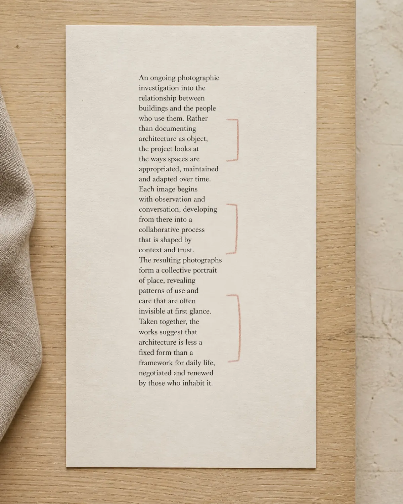
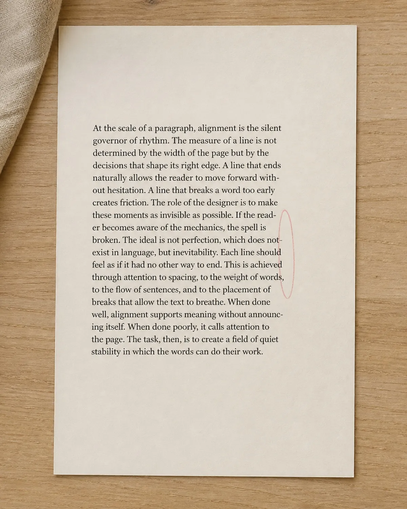
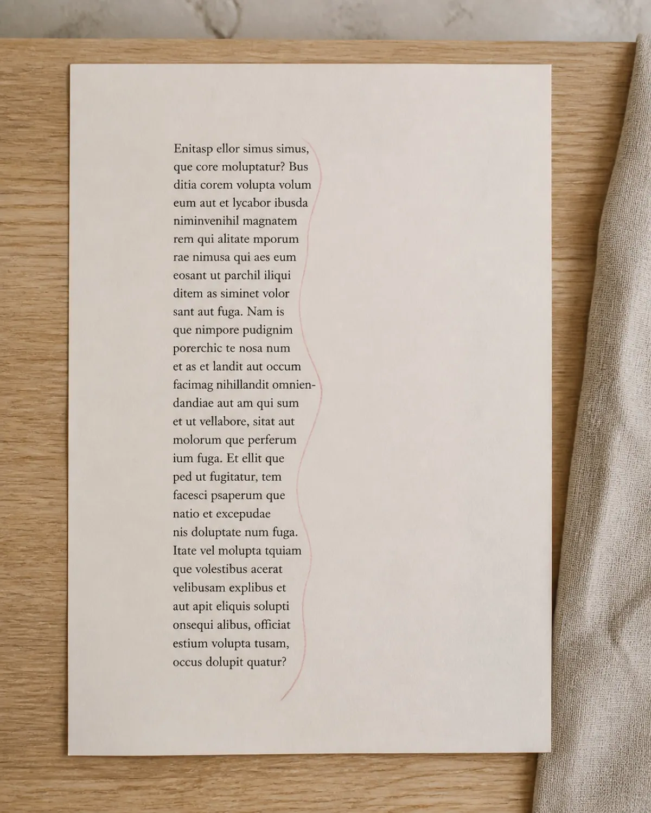

The ragged right edge of a text column is the last thing most designers look at and the first thing a typographer sees. This is lesson four of week seven, unedited and in full.
Taught by Della Voss. If it lands, the other forty-one are the same shape.
See the full courseSet a column of text ragged right and the software makes a decision for you every single line. It breaks where the next word will not fit, and it does not care what the resulting edge looks like. Most of the time that is fine. Perhaps one column in five, it is not.
There are three failures worth learning to see, and once you can see them you will never unsee them — which is the honest warning attached to this entire course.
One short line sitting between two long ones cuts a bite out of the edge. Your eye reads it as a gap in the paragraph rather than a break in a sentence, and the column stops feeling solid.
Four or five lines that all end at nearly the same point read as a failed attempt at justification. A rag has to look intentional, and near-straight is the one shape that never does.
Hyphens stacked on consecutive lines. Two is survivable, three is a ladder, and a ladder pulls the eye down the margin instead of across the line.

NotchedShort lines trapped between long ones. The edge reads as damage.

Near-flushAlmost straight, plus a hyphen ladder. Reads as a mistake, not a choice.

DesignedAn even step, no ladder, no notch. Four manual breaks got it there.
Open the last thing you set in two columns. Turn hyphenation off, print it, and draw the right-hand edge of each column as a single line without looking at the words. If the line you drew has a notch, a ladder or a straight stretch, you have found the four breaks worth putting in by hand.
A good rag is not random. It is a shallow, even step that nobody notices — which is the whole job, most days.
One decision, demonstrated on real work, with an exercise you can do the same evening. Nine weeks of them, plus six live critiques on your own pages.
A field course in editorial typography, taught in nine weeks by Della Voss. Published by Primer Editions, Rotterdam.
Cohort ten opens 4 March. Twenty critique seats, and they have gone early every time so far.
Enrol — $349